Hello!! My name is Bill Doyle and I must say today proudly that I chose the correct profession for me. It’s a great job! However, a "World Wide Company Covid layoff" in early 2020 (and work stoppage as nobody was hiring anyone then) eliminated my situation and forced me to regroup to retrain and stay sharp as I "rebranded" me for today. (I have learned website design and more.) I am extremely confident I will be back in this awesome profession again soon.
"You did great things in your life and you earned your happiness, so live always in that mindset as you don't dwell on the bad stuff. If you do that, then you are indeed Living in Your Good!" - I SAID THIS...
Without Graphic Design there for me, and to keep a roof over my head and food on my table, I took a local job in Parsippany, NJ as an Personal Online Shopper at ShopRite #355. I figured it's still retail, but instead of being in a corporate office advertising products in print form, I would actually be in store collecting those same items in the Supermarket. It was honest work and I was there for two successful years. (2020-2022)
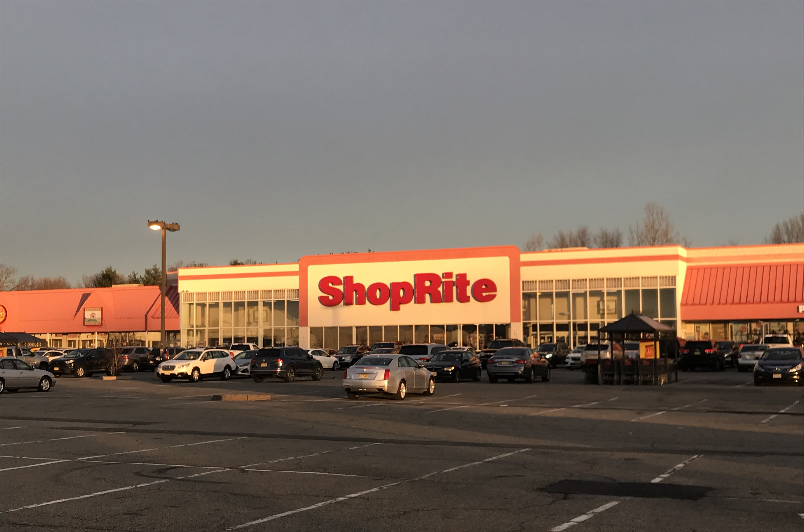
Next, I had the opportunity to help my family (mom in nearby nursing home) so I moved to Washington, NJ in Warren County in North-West New Jersey as I continued this line of work. (Personal Online Shopper) This time it is with Walmart #2503 in Hackettstown, NJ which is in the Mansfield Township area. (2022-Present) I believe the secret of success in life is to be ready for opportunity when it comes. These experiences for sure got me better!
But in every free moment I had since 2020, I studied Web Design (and more) on a part time basis. With the help of Udemy.com and even free videos off of YouTube, I learned how to code using Video Studio Code and I earned a very wonderful understanding of HTML, CSS and more! Making responsive web designs where it can work on all viewing screens under user experience is the goal, as media queries and even Flexbox can help that persuit. A site called GitHub became my online server to showcase my web designs. It's so much fun!

In March of 2024, I won the 2nd Shift Associate of the Month Award at Walmart #2503 in Hackettstown, NJ as an Online Personal Shopper. I worked the 11am-8pm shift then and it was awarded to me by vote by the store managers.
It's important to note that I studied Fine Arts (1988-1990) at the County College of Morris (CCM) and Graphic Design (1990-1992) at Montclair State University, both in Northern NJ, to earn a AA Degree and BA Degree, respectively.

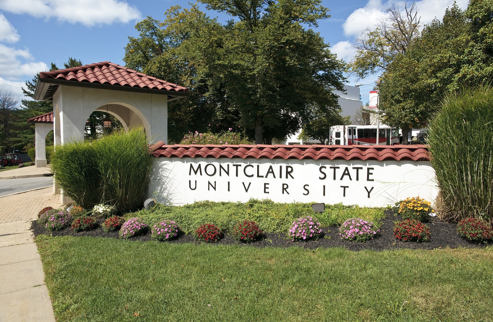
My resume journey took me to these three exciting places designing circulars and more. Please click square(s) below to see how I fared at each location:
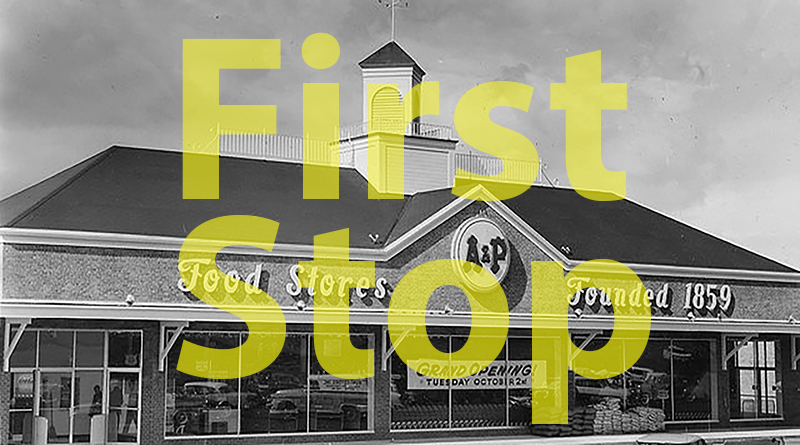
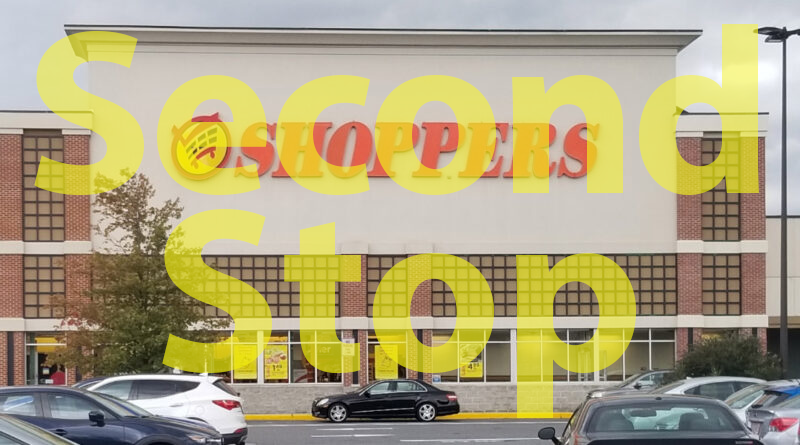
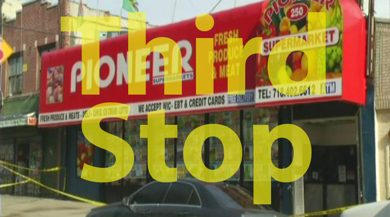
I am able to fit right in and get along with others on a very productive level where the goals each place I worked at, their mission statemate of success, as how they defined it, were met by me with fantastic production and a very good work ethic. I was able to get along with others and became a strong asset to each respective operation. I can't wait to join your design team. Again to all, thank you for your time!
THE FUTURE IS NOW! LET'S CHAT! EMAIL ME
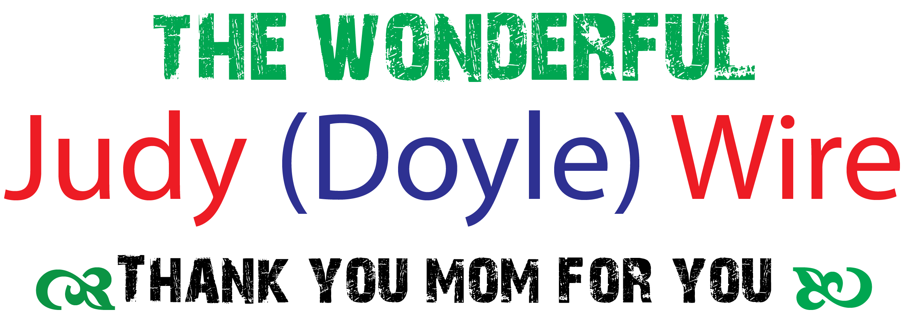
My mom in 2020 was diagnosed with Dementia and today she is in a nearby nursing home doing the best she can at age 86. I love her very much and I moved nearby to her to help the situation of support any way I can. I needed to and wanted to stay close to her.


Perhaps I could have found a graphic design job out of state then or at a far NJ distance? I did that before with success. But at what cost as me being here was needed. In a way, my graphic design career was put on hold (in addition to the covid pandemic shut down) as I took a job as an online shopper nearby to pay the bills. It was relatable to my past profession. I designed food circulars in a corporate office as explained in this website. Today, I am finding those same items from the circular in the store for customers. I turned into a solid employee for ShopRite and then Walmart doing this type of work. However, my love to do graphic design is still burning strong.
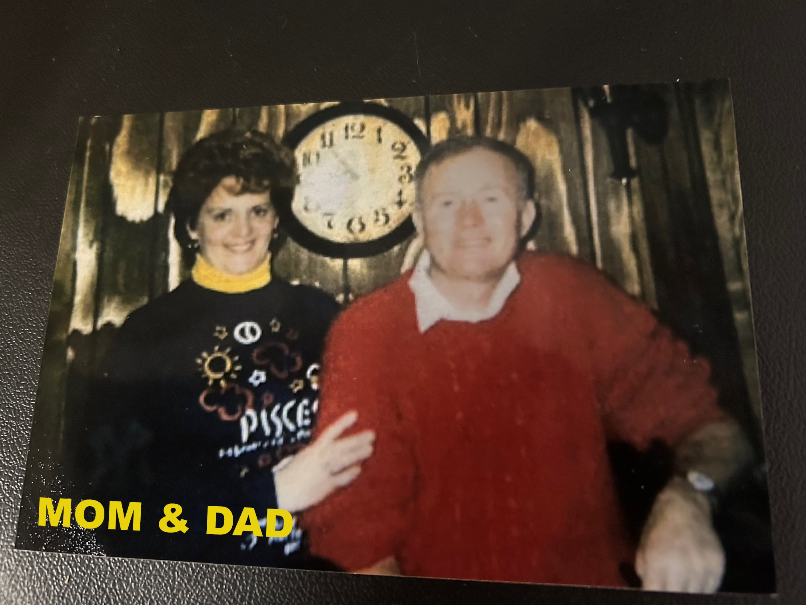
One day I will pursue this line of work when that day unfortunately comes where God calls for my mom to be with him in Heaven. I am not saying this to generate sympathy or create sadness. This is just the reality of life. I get it. I am just explaining this gap in time between this line of artistic work. I still stayed sharp. I even learned web design with online courses. Hire me because I am talented and I will fit in with your successful team. I just wanted to be candid with you to tell you what's up. Thank you for your understanding and have a great day.
❶ The first step would be for the customer to go online using the stores website and pick out anything she or he wants to buy in the entire store.
❷ The next step would be for me to shop for those requested items and collect them in blue containers or totes which are on a pushing cart. I would transport those items to the proper place for storage within the Pick up department of the store.
❸ The last step would be to get those items to the customer, either by delivery to their home or a pick up (by the customer where they come into the store) at a set time.
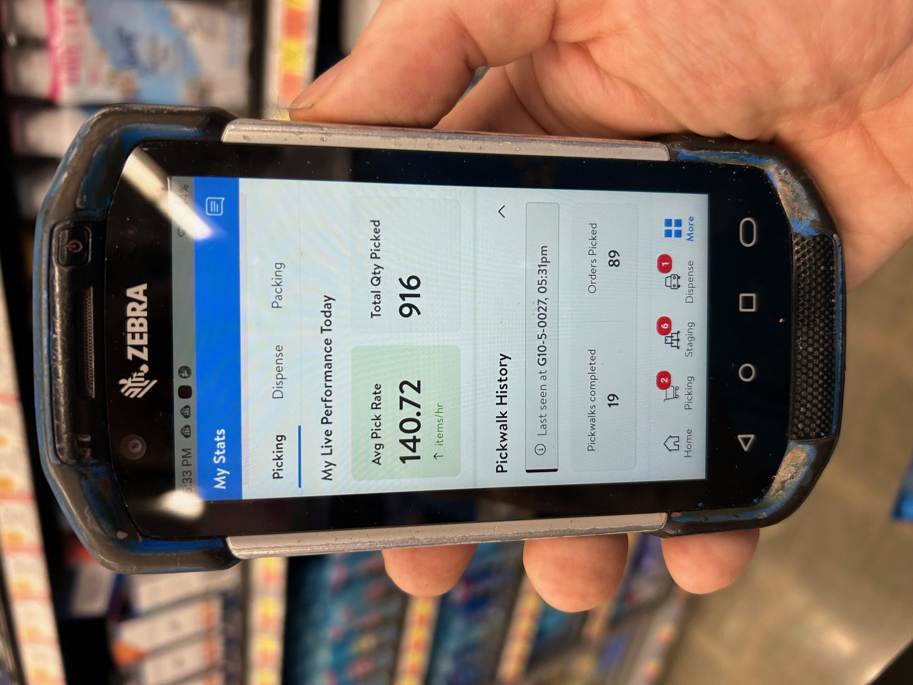
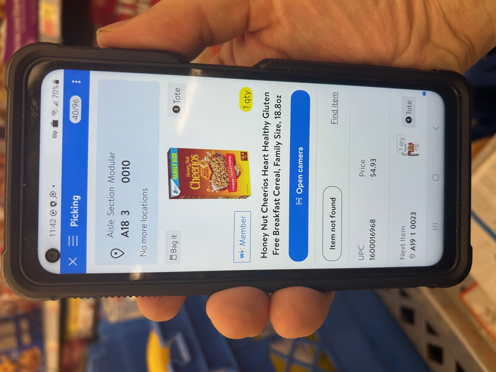
On April 25, 2025 (a Friday) I collected 916 items on my 9am-6pm shift (as pictured above) where I went out on a walk 19 times where 89 orders were assigned to me. And on a typical Pick Walk at Walmart #2503, you see the Cereal being shopped for by me as it's in Aisle A-18, Section 3 and in Modular or Space 10. (top and below here)
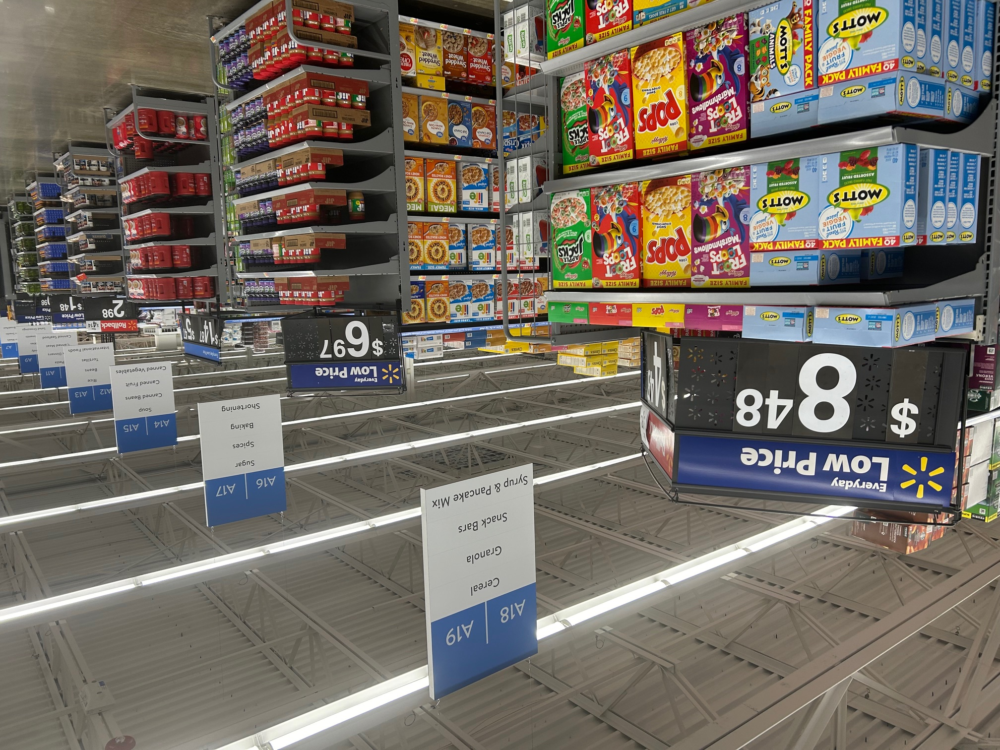
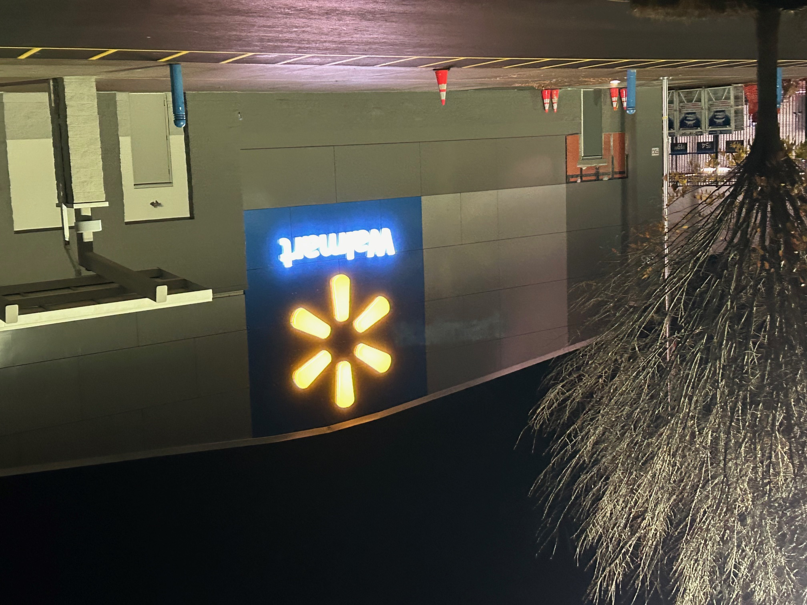
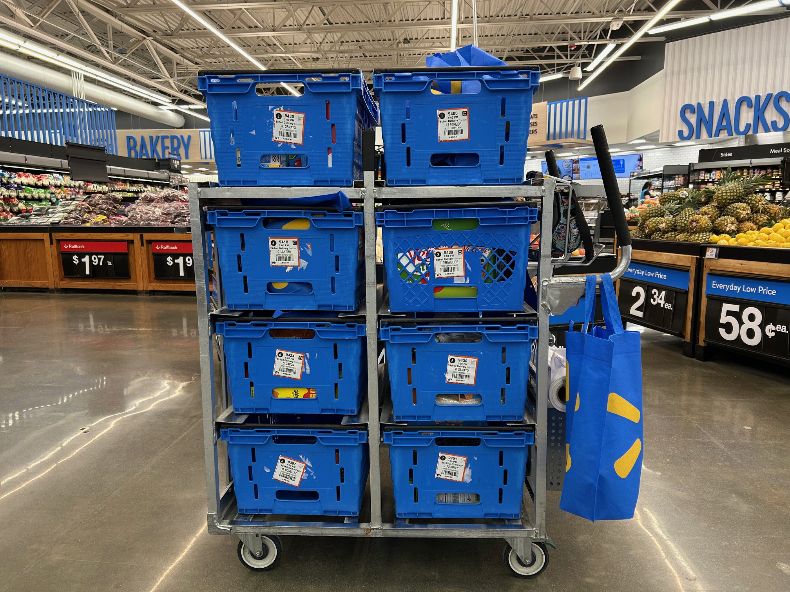
With my successful experiences from the store level, I will be able to return easily to the corporate world today breaming with more confidence and knowledge doing advertising type work.
Working in a tight deadline corporate setting prepared me for a successful time as an personal online shopper, no doubt about it. Because I remembered those items designing a store circular, I now see them on the shelves of Walmart and I am successfully able to find them to collect for my job. Now, because I collected them during a Walmart shift, it will be very easy to transition back to a corporate setting doing advertising retail because I saw them first hand in a store location. The correct item will always be advertised because of my "boots on the ground" approach. Using a push cart (above) with eight blue totes is/was my workplace office, so to speak.
In March of 2024, I won the 2nd Shift Associate of the Month Award at Walmart #2503 in Hackettstown, NJ as an Online Personal Shopper. I worked the 11am-8pm shift then and it was awarded to me by vote by the store managers.
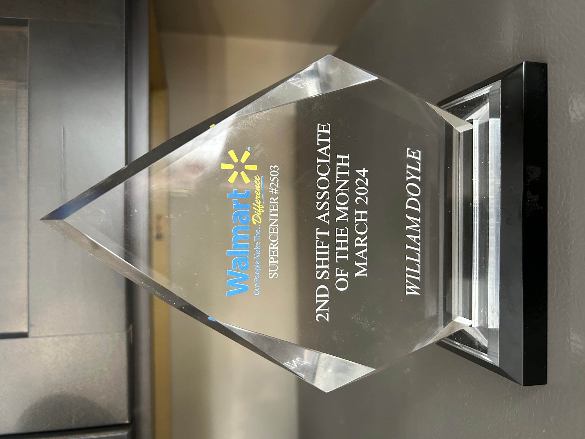
THE FUTURE IS NOW! LET'S CHAT! EMAIL ME